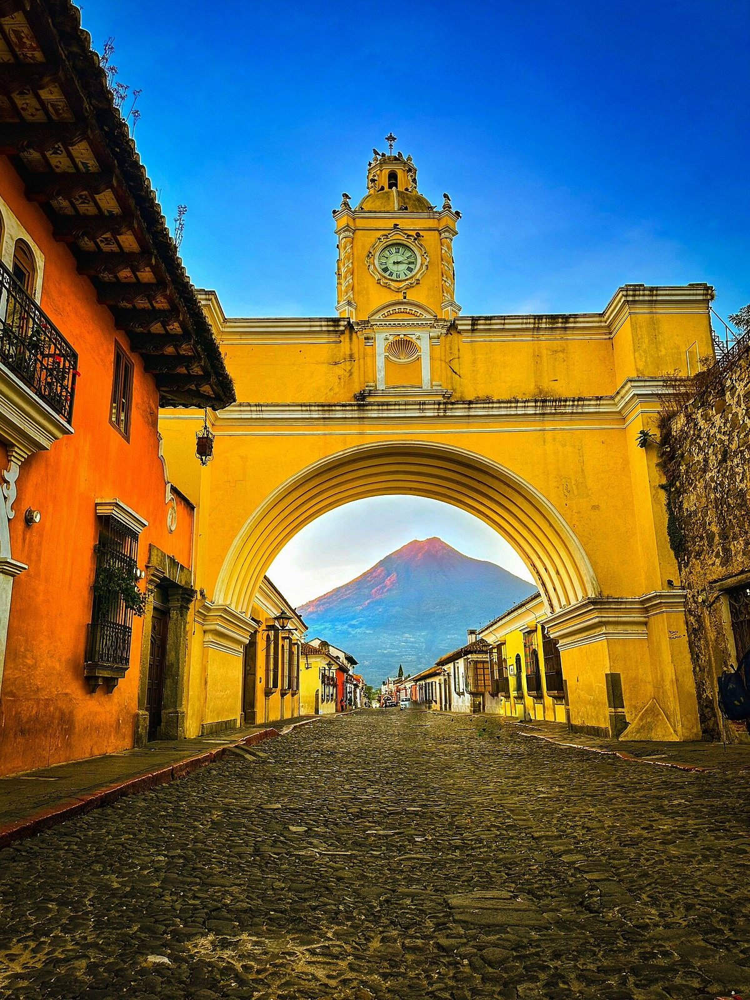

Arco de Santa Catalina
Uno de los lugares más famosos de Antigua Guatemala.

Volcán de Agua
Un volcán impresionante que rodea la ciudad.

Comida típica
Disfruta platos como pepián y tamales.
Antigua Guatemala es una ciudad colonial famosa por sus calles empedradas y de edificios antiguos. Fue la capital de Guatemala hasta el terremoto de 1773
En Antigua podemos encontrar varios lugares bonitos para distraernos y entretenernos y convivir en familia y tener un momento agradable en familia

Uno de los lugares más famosos de Antigua Guatemala.
Un volcán impresionante que rodea la ciudad.
Disfruta platos como pepián y tamales.